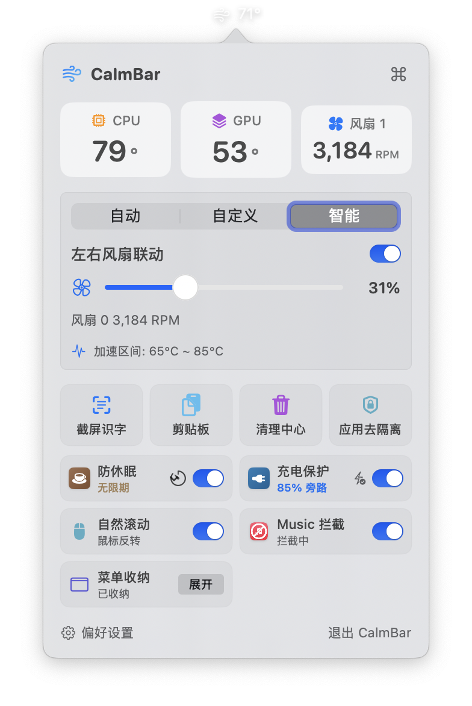
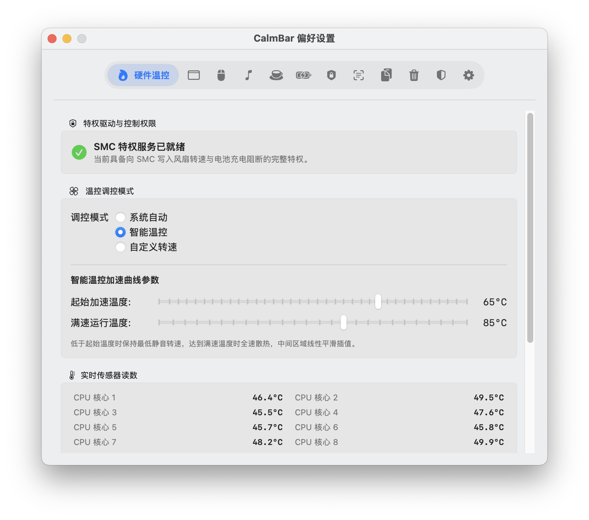
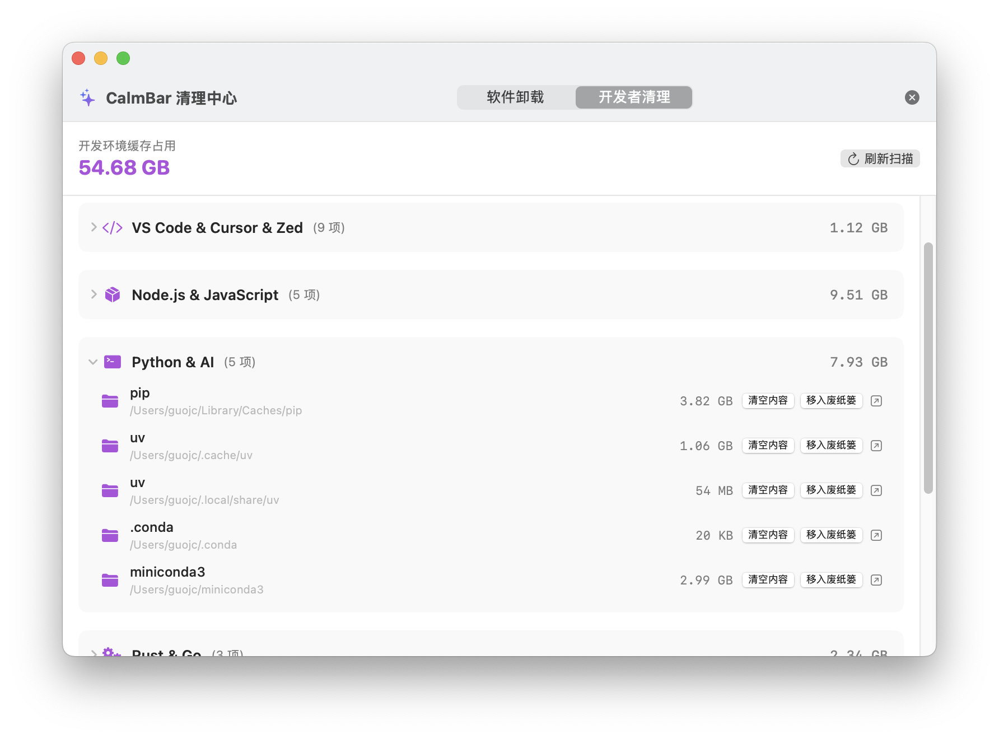
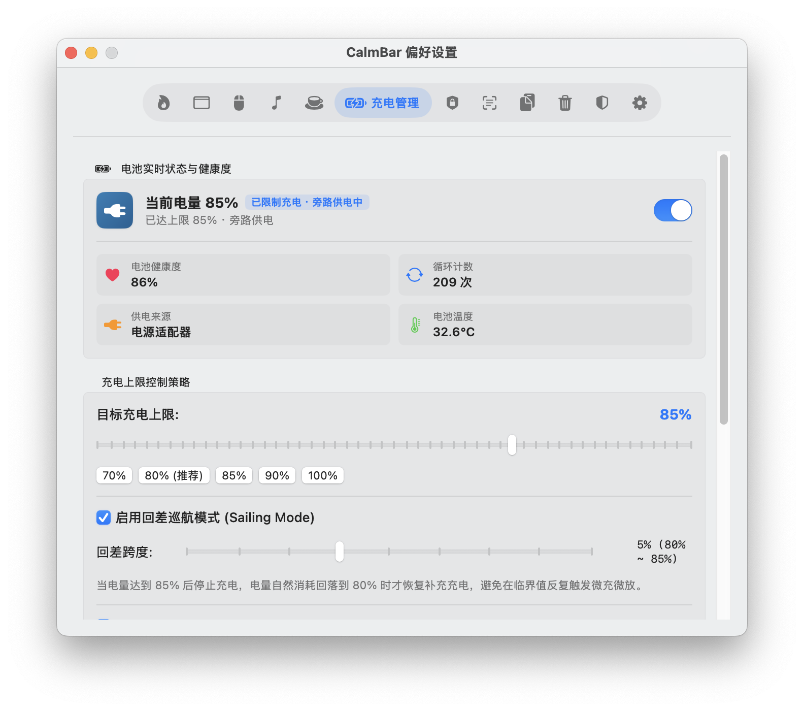
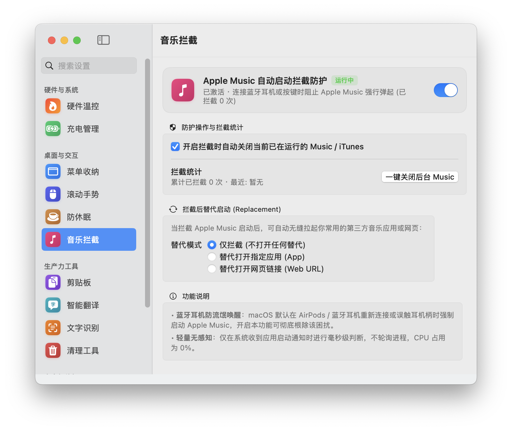
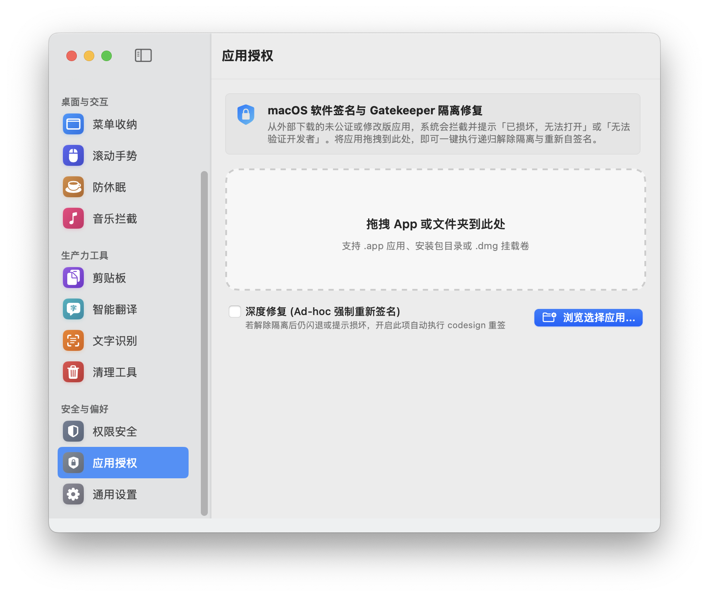

硬件温控 · 菜单栏收纳 · 鼠标滚轮解耦 · 媒体启动拦截 · 80% 充电上限保护 · 智能防休眠 · 开发者环境深度清理 · 离线 OCR 屏幕识字 · AI 划词翻译

深度探索
点击下方功能模块，预览 CalmBar 原生设置与交互界面。
让键盘成为最高效的生产力工具。无需将鼠标移动到菜单栏，只需按下全局热键，随心调起系统温控模式、屏幕识字、剪贴板管理或一键深度清理。
sz 识字、ql 清理、cd 充电）
Enter 即可秒级执行命令官方固件经常在温度达到 90°C+ 甚至撞墙时才猛增风扇转速。CalmBar 允许你设定平滑的温度响应曲线，在温度微升时即刻温和提速，保持机身时刻清凉且维持静音。

传统卸载只删除 .app，残留数 GB 的缓存与 Application Support。针对开发者，CalmBar 专项扫描并清理多语言工具链的深层缓存与废弃工程目录。

笔记本长期连接电源工作，电池常年维持在 100% 满压状态，极易导致锂聚合物电池鼓包。CalmBar 提供硬件级 80% 充电切断，并设置下限回差充电巡航。

传输大文件、编译代码或开会展示时防止屏幕意外熄灭。同时彻底终结误触键盘播放键或连接蓝牙耳机时强行弹出 Apple Music 的困扰。

多模态图文剪贴板记录，集成 Apple 神经引擎离线文字识别。无论图片中的文字还是网页上的二维码，框选即可瞬时提取。
采用纯 HTTP OpenAI 兼容协议接入腾讯混元 Hy-MT2-1.8B 等专用大模型，零本地重型依赖。在任意应用划选文字连按两次 ⌘+C 或按
⌥+⌘+T，即刻在光标旁弹出半透明毛玻璃结果浮窗。
从网络下载的开源或第三方软件常提示“已损坏，无法打开”。CalmBar 支持拖拽一键递归剥离隔离属性（xattr -cr），并自动执行 Ad-hoc 自签名。

原生架构
抛弃沉重的 Web 容器包装，专为 Apple Silicon 架构量身打磨。
高效快捷键
为 CalmBar 配备毫秒级响应的专属 AI 翻译大模型，支持纯本地 Apple Silicon 硬件加速或 Linux / Docker 跨平台自建服务。
专为 M1/M2/M3/M4 系列芯片定制，直接利用 Apple Metal GPU 与统一内存，4-bit 量化仅需约 1.2GB 内存。
# 前置依赖: brew install python@3.11
cd doc/HyMT2部署 && chmod +x install.sh && ./install.sh基于 GGUF 量化模型与 llama-server，支持 Linux 服务器、家庭群晖 / QNAP / Unraid NAS 及 Windows WSL2 跨平台并发部署。
docker run -d --name hy-mt2-server -p 8000:8080 \
-v /opt/models:/models \
crpi-a1liy20beodq2bdl.cn-beijing.personal.cr.aliyuncs.com/bujic/llama-server:pr22836 \
-m /models/Hy-MT2-1.8B-Q4_K_M.gguf -c 2048 -t 8 --cont-batching选择适合你的下载渠道，开启清凉从容的 Mac 体验。
由于本项目为个人独立开源软件，未集成 Apple 商业付费证书，在 macOS 上直接双击打开时，系统安全机制（Gatekeeper）可能会拦截并提示 “应用程序已损坏，无法打开” 或 “无法验证开发者”。
在 macOS 终端（Terminal）中执行以下命令移除系统隔离属性即可正常运行：
sudo xattr -rd com.apple.quarantine /Applications/CalmBar.appgit clone https://github.com/chao-eng/CalmBar.git
cd CalmBar && bash app/build_app.sh